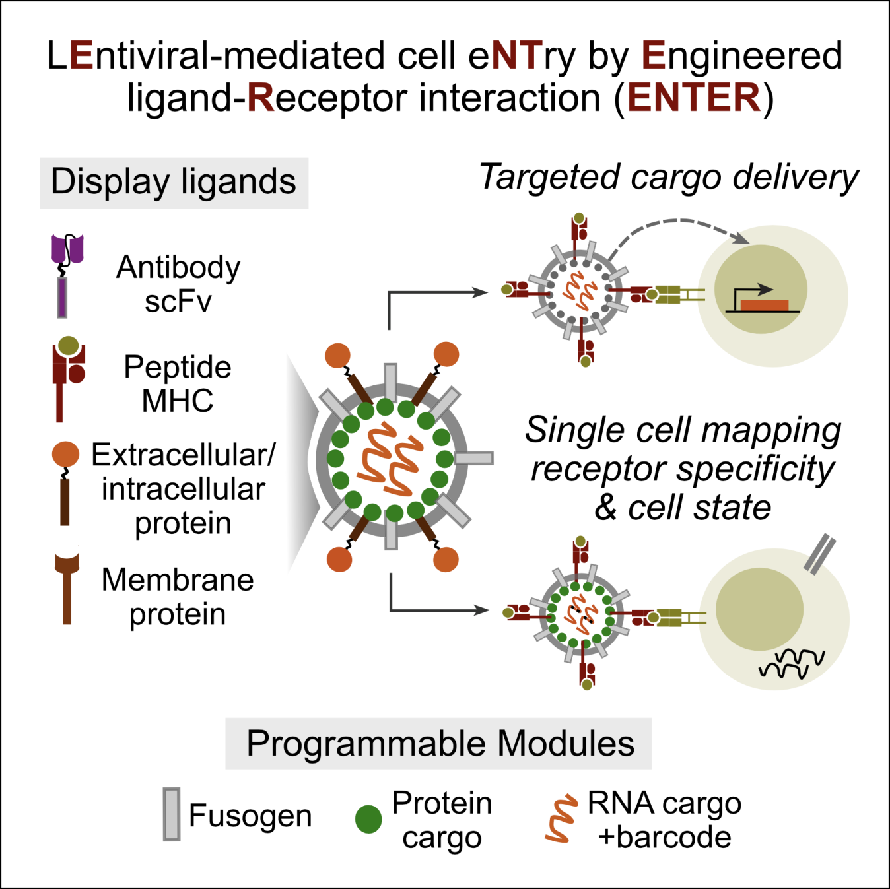
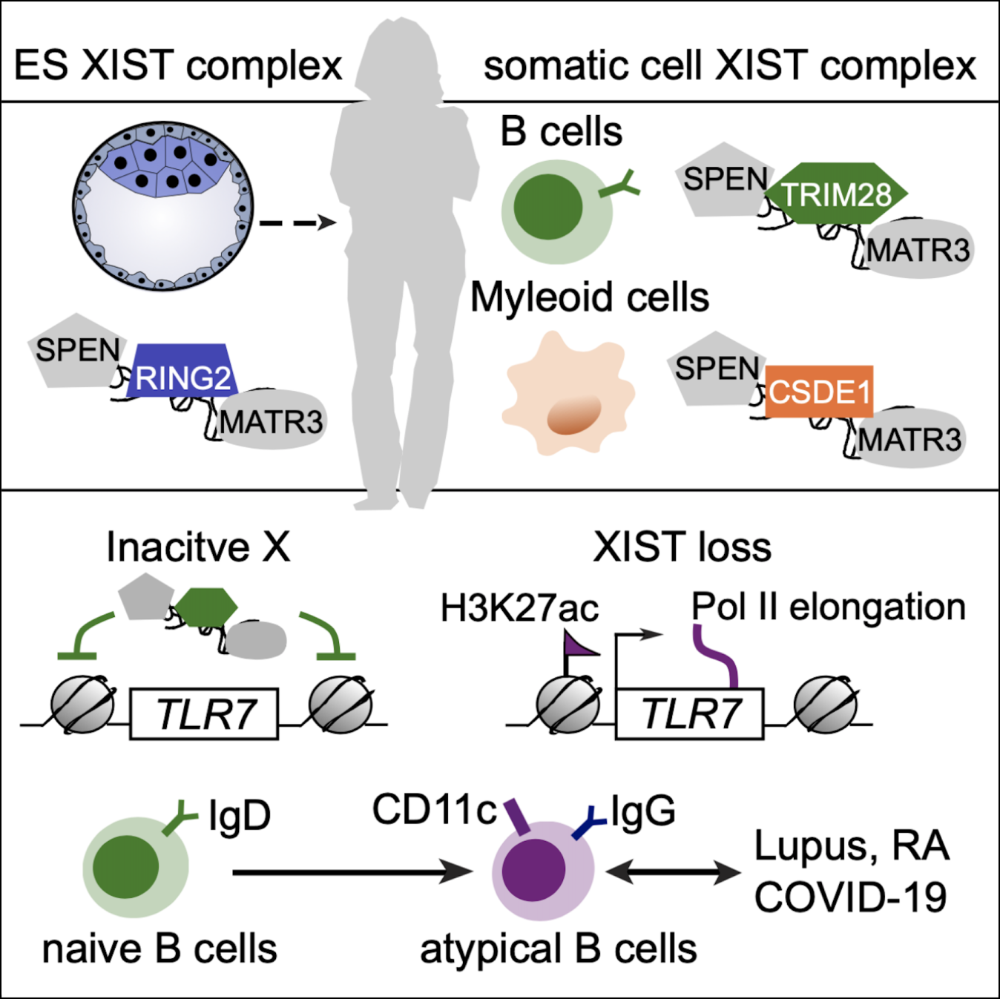
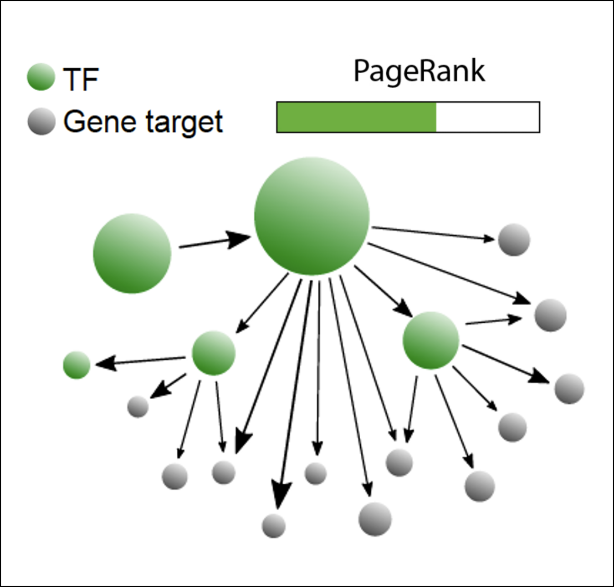
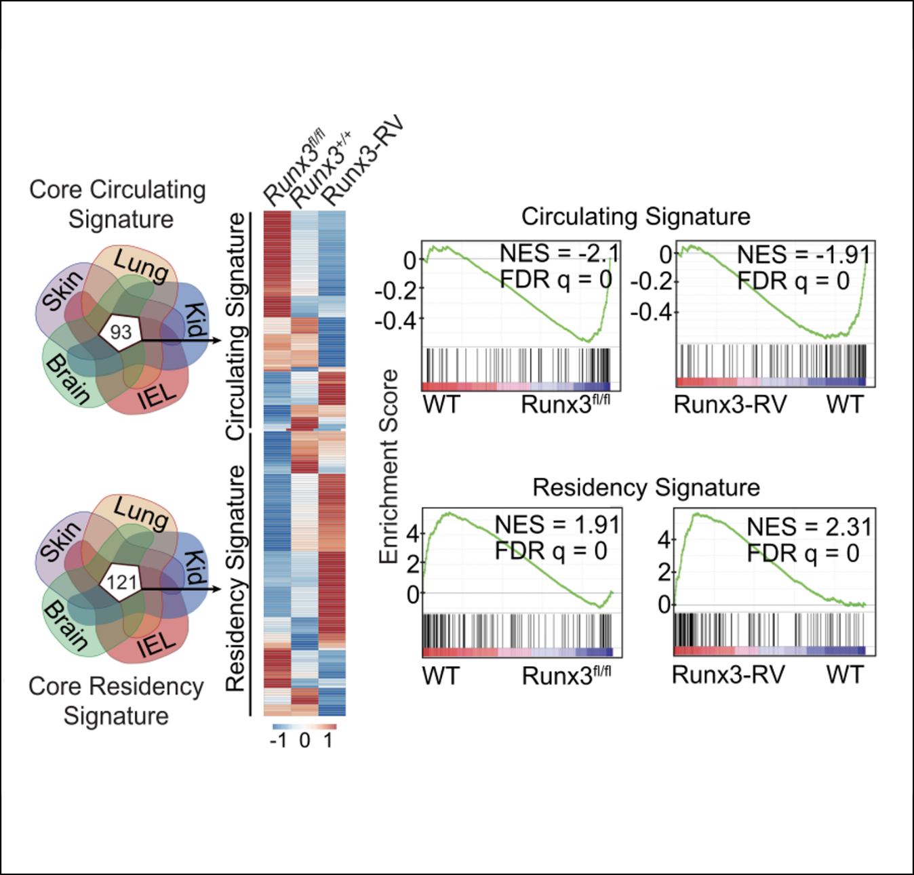

Systematic discovery of receptor-ligand biology by engineered cell entry and single-cell genomics
Yu B*, Shi Q*, Belk JA, Yost KE, Parker KR, Li R, Liu BB, Huang H, Lingwood D, Greenleaf WJ, Davis MM, Satpathy AT, Chang HY. bioRxiv 2021 (*equally contributed)This work describes a modular, lentiviral-based display and delivery platform It enables decoding of ligand-receptor interactions, receptor-specific cargo delivery, and mapping of receptor specificity and cell states of single-cells

B cell-specific XIST complex enforces X-inactivation and
restrains atypical B cells
Yu B, Qi Y, Li R, Shi Q, Satpathy AT, Chang HY.
Cell 2021 184(7):1790-1803
This study uncovered an essential role of female-specific lncRNA XIST in maintaining X-inactivation and restraining atypical B cell formation. This work starts to explain why females are more likely to develop autoimmune diseases.

Epigenetic landscapes reveal transcription factors that regulate
CD8+ T cell differentiation
Yu B*, Zhang K*, Milner JJ, Toma C, Chen R, Scott-Browne JP,
Pereira RM, Crotty S, Chang JT, Pipkin ME, Wang W, Goldrath AW
Nature Immunology 2017 18(5):573-582 (*equally contributed)
This work systemically mapped the epigenetic landscape of CD8 T cells upon pathogen infection. By applying google webpage ranking algorithm in transcriptional network, this platform uncovered key TFs for effector or memory T cell formation.

Runx3 programs CD8+ T cell residency in non-lymphoid tissues
and tumors
Milner JJ, Toma C*, Yu B*, Zhang K, Omilusik KD, Phan A, Wang DP,
Getzler A, Crotty S, Wang W, Pipkin ME, Goldrath AW
Nature 2017 552(7684):253-257 (*equally contributed)
This study unveiled a unique role of transcription factor RUNX3 in tissue residency of CD8+ memory T cells, providing a novel T cell engineering strategy to enhance tumor infiltration.
PUBLICATIONS
-
Systematic discovery of receptor-ligand biology by engineered cell entry and singe-cell genomics
Yu B*, Shi Q*, Belk JA, Yost KE, Parker KP, Huang H, Lingwood D, Davis MM, Satpathy A, Chang HY. bioRxiv. 2022 (*equally contributed) -
B cell-specific XIST complex enforces X-inactivation and restrains atypical B cells.
Yu B, Qi Y, Li R, Shi Q, Satpathy A, Chang HY. Cell. 2021 184(7):1790-1803 -
Bromodomain protein BRD4 directs and sustains CD8 T cell differentiation during infection
Milner JJ, Toma C, Quon S, Omilusik K, Scharping NE, Dey A, Campos MR, Nguyen H, Getzler AJ, Diao H, Yu B, Delpoux A, Yoshida TM, Li D, Qi J, Vincek A, Hedrick SM, Egawa T, Zhou M, Crotty S, Ozato K, Pipkin ME, Goldrath AW. Journal of Experimental Medicine. 2021 218(8) -
Heterogeneity and clonal relationships of adaptive immune cells in ulcerative colitis revealed by single-cell analyses.
Boland BS, He Z, Tsai MS, Olvera JG, Omilusik KD, Duong HG, Kim ES, Limary AE, JIn W, Milner JJ, Yu B, Patel SA, Louis TL, Tysl T, Kurd NS, Bortnick A, Quezada LK, Kanbar JN, Miralles A, Huylebroeck D, Valasek MA, Dulai PS, Singh S, Lu LF, Bui JD, Murre C, Sandborn WH, Goldrath AW, Yeo GW, Chang JT. Science Immunology. 2020 5(50) -
Bcl-6 is the nexus transcription factor of T follicular helper cells via repressor-of-repressor circuits
Choi J, Diao H, Faliti CE, Truong JT, Rossi M, Belanger S, Yu B, Goldrath AW, Pipkine ME, Crotty S. Nature Immunology. 2020 21(7), 777-789 -
T-bet transcription factor promotes Antibody-Secreting cell differentiation by limiting the inflammatory effects of IFN-γ on B cells
Stone SL, Peel, JN, Scharer CD, Risley CA, Chisolm DA, Schultz MD, Yu B, Ballesteros A, Wojciechowski W, Mousseau B, Misra RS, Hanidu A, Jiang H, Qi Z, Boss JM, Randall TD, Brodeur SR, Goldrath AW, Weinmann AS, Rosenberg AF, Lund FE. Immunity. 2019 50 (5), 1172-1187 -
The Transcription Factor Runx3 Establishes Chromatin Accessibility of cis-Regulatory Landscapes that Drive Memory Cytotoxic T Lymphocyte Formation
Wang D, Diao H, Getzler AJ, Rogal W, Frederick M, Milner J, Yu B, Crotty S, Goldrath AW, Pipkin ME. Immunity. 2018 48 (4), 659-674 -
Sustained Id2 regulation of E proteins is required for terminal differentiation of effector CD8+ T cells
Omilusik KD, Nadjsombati M, Shaw L, Yu B, Milner J, Goldrath AW. Journal of Experimental Medicine. 2018. 215 (3), 773-783 -
Runx3 programs CD8+ T cell residency in non-lymphoid tissues and tumors
Milner JJ, Toma C*, Yu B*, Zhang K, Omilusik KD, Phan A, Wang DP, Getzler A, Crotty S, Wang W, Pipkin ME, Goldrath AW. Nature. 2017 552(7684):253-257 (*equally contributed) -
Epigenetic landscapes reveal transcription factors that regulate CD8+ T cell differentiation
Yu B*, Zhang K*, Milner JJ, Toma C, Chen R, Scott-Browne JP, Pereira RM, Crotty S, Chang JT, Pipkin ME, Wang W, Goldrath AW. Nature Immunology. 2017 18(5):573-582 (*equally contributed) -
Early transcriptional and epigenetic regulation of CD8+ T cell differentiation revealed by single-cell RNA sequencing
Kakaradov B, Arsenio J, Widjaja CE, He Z, Aigner S, Metz PJ, Yu B, Wehrens EJ, Lopez J, Kim SH, Zuniga EI, Goldrath AW, Chang JT, Yeo GW. Nature Immunology. 2017 18(4):422-432 -
Transcriptional repressor ZEB2 promotes terminal differentiation of CD8+ effector and memory T cell populations during infection
Omilusik KD, Best JA, Yu B, Goossens S, Weidemann A, Nguyen JV, Seuntjens E, Stryjewska A, Zweier C, Roychoudhuri R, Gattinoni L, Bird LM, Higashi Y, Kondoh H, Huylebroeck D, Haigh J, AW Goldrath. Journal of Experimental Medicine. 2015. 212(12): 2027-39 -
Signal-induced Brd4 release from chromatin is essential for its role transition from chromatin targeting to transcriptional regulation
Ai N, Hu X, Ding F, Yu B, Wang H, Lu X, Zhang K, Li Y, Han A, Lin W, Liu R, Chen R. Nucleic Acids Res. 2011. 39, 9592–9604 -
A microRNA expression and regulatory element activity atlas of the mouse immune system
Rose SA, Wroblewska A, Dhainaut M, Yoshida H, Shaffer JM, Bektesevic A, Ben-Zvi B, Rhoads A, Kim EY, Yu B, Lavin Y, Merad M, Buenrostro JD, Brown BD Nature Immunology. 2021 22(7) 914-927 -
The cis-Regulatory Atlas of the Mouse Immune System
Yoshida H, Lareau CA, Ramirez RN, Rose SA, Maier B, Wroblewska A, Desland F, Chudnovskiy A, Mortha A, Dominguez C, Tellier J, Kim E, Dwyer D, Shinton S, Nabekura S, Qi YL, Yu B, Robinette M, Kim K, Wagers A, Rhoads A, Nutt S, Brown B, Mostafavi S, Buenrostro JD, Benoist C Cell. 2019. 176(4):897-912 -
Expression profiling of constitutive mast cells reveals a unique identity within the immune system
Dwyer DF, Barrett NA, Austen KF, Kim EY, Brenner MB, Shaw L, Yu B, Goldrath A, Mostafavi S, Regev A, Randolph GJ et al, Immunological Genome Project Consortium. Nature Immunology. 2016 17(7):878-87 -
Transcriptional programs define molecular characteristics of innate lymphoid cell classes and subsets
Robinette ML, Fuchs A, Cortez SV, Lee JS, Wang Ym, Durum SK, Gilfillan S, Shaw L, Yu B, Goldrath A, Mostafavi S, Regev A, Colonna M et al, Immunological Genome Consortium. Nature Immunology. 2015 16(3):306-17
Immunological Genome Project Consortium publication